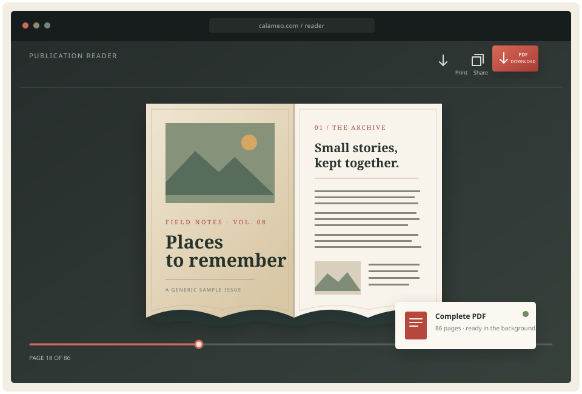
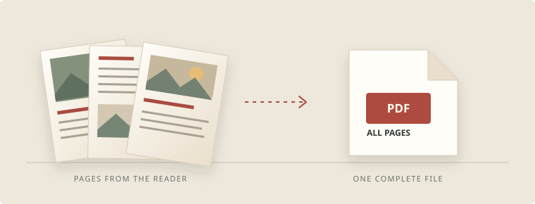

Native controls
Restores Calaméo’s own Download and Print buttons when they are disabled.
Free browser extension · GNU AGPL v3
Download complete Calaméo publications as PDF, directly from the reader. The extension restores the native Download and Print buttons when Calaméo disables them.
Explore the source on GitHub
Made for the reader
One small extension that brings the complete document back within reach.
Restores Calaméo’s own Download and Print buttons when they are disabled.
Every page is prepared in the background and saved as one document from the reader.
Print the full document with the browser’s normal dialog, including with Ctrl+P.
The PDF is assembled locally in your browser. No account or third-party converter is needed.
From pages to a file
The extension quietly prepares the document while you read. Download it in one click, or use the native print dialog when you need selected pages.

Best for a complete PDF from inside the reader: this project combines direct download, restored native controls and background preparation.
| Capability | Calaméo PDF Downloader (this project) | Florianclume WebExtension | ComFoxx Download PDF |
|---|---|---|---|
| Where it works | Inside Calaméo’s reader, using its native Download and Print buttons. | Inside the reader, with a separate floating Print button. | On a separate web page; paste in the publication URL. |
| Full publication PDF | One click downloads all pages as one PDF. | Loads every page, then opens the browser print dialog. | Loads every page, then opens the browser print dialog. |
| Disabled reader buttons | Re-enables the native Download and Print buttons. | Adds a separate print control; does not restore the reader buttons. | Not integrated with the Calaméo reader. |
| Preparation | Prepares the complete PDF in the background before you click. | Loads page images after you click its print button. | Loads page images after you submit the form. |
| Selected pages | Choose page ranges in the browser’s print dialog. | Choose page ranges in the browser’s print dialog. | Choose page ranges in the browser’s print dialog. |
| Status and access | Firefox 140+, Chrome, Edge and Brave (tested). Free forever · AGPL v3. | Firefox and Edge listings; Chrome package on GitHub Releases. | Archived on 22 September 2026; its README recommends Chromium. |
Install the published add-on from Firefox Add-ons.
Open the Firefox listing →Download the Chromium package from GitHub Releases, then load it as an unpacked extension.
Get the latest release →Publication pages are fetched from Calaméo’s image servers and assembled in your browser. The exported PDF contains page images; OCR text, links and interactive media are not added.
Open a publication at calameo.com/read/…, then use its Download button to save all pages. Use Print or Ctrl+P to open your browser’s print dialog. To keep selected pages, choose “Save as PDF” and enter the page numbers there.